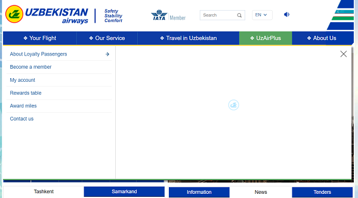
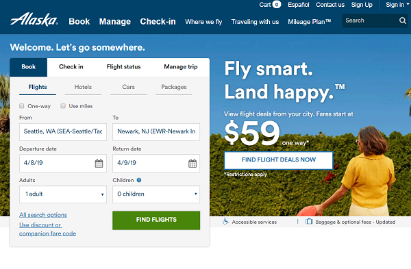
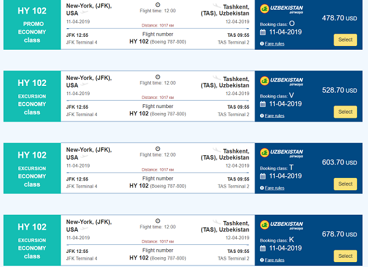
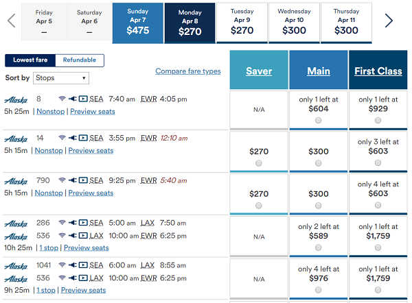
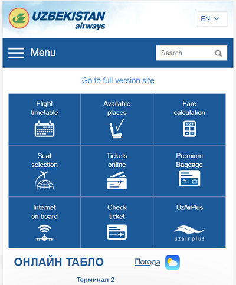
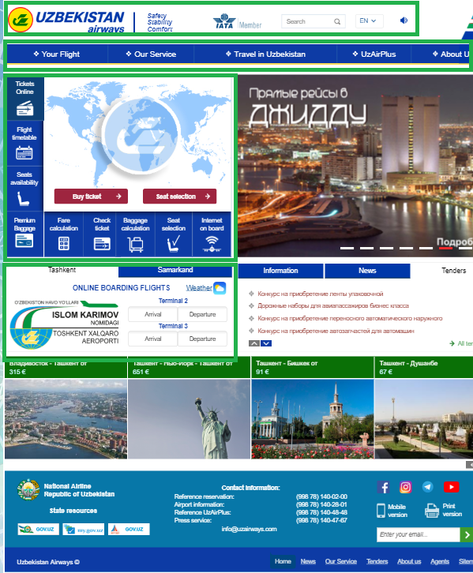

Intro
For this usability analysis, I will be outlining Uzbekistan Airways. Uzbekistan Airway is, as its name suggests, is an airline. The primary business is flight travel and as such, websites proving any service should be easy to navigate and have a clear, understandable UI for customers to be able to purchase services and goods. For this reason, I will analyze these four key criteria: navigation, clear content, mobile development, and visual hierarchy.
Navigation
Most if not all airline websites give users the ability to sign up for accounts to track their flights, rewards, and other information related to the airline and flights. When navigating to Uzbekistan Airway’s website it would appear as if they do not grant this opportunity to users. Sign in/sign up links and boxes are generally displayed near the top right of the page.
On this page, users will have to navigate to the “UzAirPlus” tab, where a set of menu options will be displayed. From there, users can click “Become a member” or “My account.”
 Note that users have to navigate to UzAirPlus on the right, navigate back to the left side of the screen, and click on desired page.Compare this with Alaska Airlines website and we can see a stark difference. To access an account or sign up for one, users can navigate to the top right of the screen where it is easily accessible.
 Note that users only have to navigate and click on the top right hand side of the screen.To easily remedy this inconvenience, Uzbekistan Airways could create easy access links next to their search box as there is quite a bit of real estate in that section of their page. Aside from a few issues with placement of content and perhaps having a problem of having too many options, this page has a fairly straight forward navigation.
Clear Content
It seems unfair to judge an airline from Uzbekistan with a western perspective. However, on a general usability level, I found that the main service that was being promoted was presented to customers in a confusing manner. For example, if I wanted to book a flight from New York (JFK) to Tashkent (TAS) on the days the airline has available flights, there is a wide range of fares and it’s not clear to me why there is such a range. Finding flights was easy enough but picking between different fares? Not so much.
The easiest difference to discern is the jump from economy class to business class, this is common amongst all airlines. What is confusing is why there are one “promo economy class”, four “excursion economy class” and one “basic economy class,” all with different fares ranging from $478.80 USD to $938.70 USD for the same exact flight.
 On the left hand side of this page, you can see the similar classes of flight. Note however, the different booking classes/prices with no explanation.Alaska Airlines also has multiple fare classes but on the booking screen, it is clearly laid out that there are 3 different fares: saver, main, and first class with prices corresponding to the fare as well as alternate flights.
 Fares, classes, and flights are separated into an easily understandable layout.Mobile Development
At first glance, the mobile version of Uzbekistan Airway’s page looks good. The menu is condensed into a 3 x 3 grid with images and text that clearly state what it’s intended use is for. I prefer the mobile page over the desktop version. The difference between the two being how “loud” the page is.
On mobile, the page displays the crucial elements. The page looks uniform with the grid laid out with blue menu boxes. On desktop, there is juxtaposition of empty space and crowded space which results in an uneven flow to the page. I would imagine to the average user; the focus of this page is the menu section and the top navigation bar. The rest of the page seems to be full of unnecessary logos, images, and information that would be suited for a dedicated sub-page.
In this instance, the mobile development highlights issues that the desktop version suffers from. If there is one thing I would suggest in improving the mobile UI, it would be to place the menu item “Tickets online” on the top left. I found myself wandering to the top left to find out where I could book tickets but instead found the flight timetable, while useful, not what I wanted.
Visual Hierarchy
Lets talk about something that I think this page nails and that is visual hierarchy. Users follow an F-pattern when scanning a page and this page is laid out in such a way to maximize this. We can see this as the navigation bar is strewn across the top. Below that is the main content which is the searching and booking flight menu.
The "meat" of the page is located on the left hand side, an area where we draw our attention to. It took me a while to realize that even though I was on the EN page, some of the content was in Uzbek. I didn't pay attention to the right hand side of the page.
This page follows a lot of industry standard conventions such as logos situated on the top left, F-pattern layout, and the bottom portion of the page dedicated to important (but information/links not important to the "user experience"). Like I mentioned earlier, it might be better to trunacate some of the excess elements of the page and focus on the main content for clean visual implementation.
 F-pattern highlighted in green.Conclusions
Honestly, if we apply usability guidelines to any website, good or bad, we could probably go in an endless cycle of optimizing in accordance to what we see fit. A lot of my suggestions and issues with Uzbekistan Airways' website can be seen as nitpicks, to which I completely understand. In the end, this airline's website works and for a lot of people, that's all that matters.
My understanding of "good design" could differ from others so it seems like a moot point to try and appease everyone (think of all the time that would go into design and implementation if that was the case!). I think the main goal here is to find something that works and apply changes if the benefits outweigh the amount of work that goes into it.